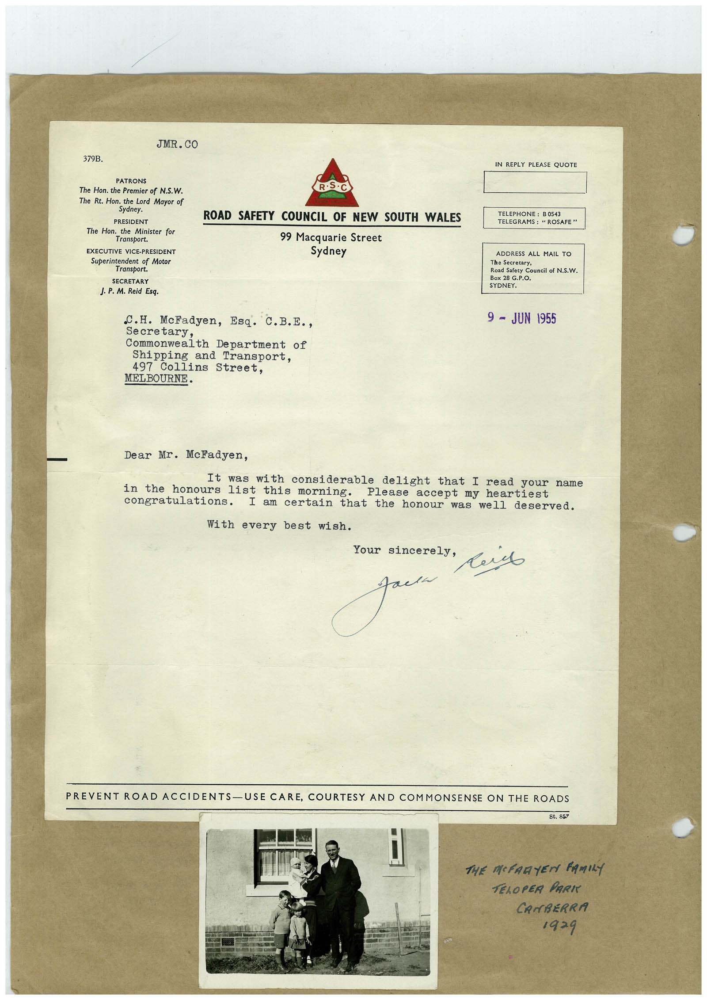

Book 1 · scan 023


Description
Transcription
Context
Review notes
Compare the machine draft with the scan. Handwriting and names need human review.
Artifacts
Edit the artifacts field in this note’s frontmatter to change these records. This summary is generated.
B01-S023-A01 — Letter, Photo & Handwritten note — Book 1, scan 023
Types: Typed document, Letter, Photo, Handwritten note
Scope: Whole scanned page; individual items can be split out during review.
Caption: Not mapped yet.
Caption source: Not recorded yet.
Caption status: unmapped
Machine transcription
JMR. CO 379B. IN REPLY PLEASE QUOTE PATRONS The Hon. the Premier of N.S.W. The Rt. Hon. the Lord Mayor of Sydney. PRESIDENT The Hon. the Minister for Transport. EXECUTIVE VICE-PRESIDENT Superintendent of Motor Transport. SECRETARY J. P.M. Reid Esq. C.H. McFadyen, Esq. C.B.E., Secretary, Commonwealth Department of Shipping and Transport, 497 Collins Street, MELBOURNE. ROAD SAFETY COUNCIL OF NEW SOUTH WALES 99 Macquarie Street Sydney TELEPHONE: B 0543 TELEGRAMS: " ROSAFE " ADDRESS ALL MAIL TO The Secretary, Road Safety Council of N.S.W. Box 28 G.P.O. SYDNEY. 9 - JUN 1955 Dear Mr. McFadyen, It was with considerable delight that I read your name in the honours list this morning. Please accept my heartiest congratulations. I am certain that the honour was well deserved. With every best wish. Your sincerely, PREVENT ROAD ACCIDENTS-USE CARE, COURTESY AND COMMONSENSE ON THE ROADS St. 857 THE MFARYER FAMILY TELOPER PARI CANBERRA 1929